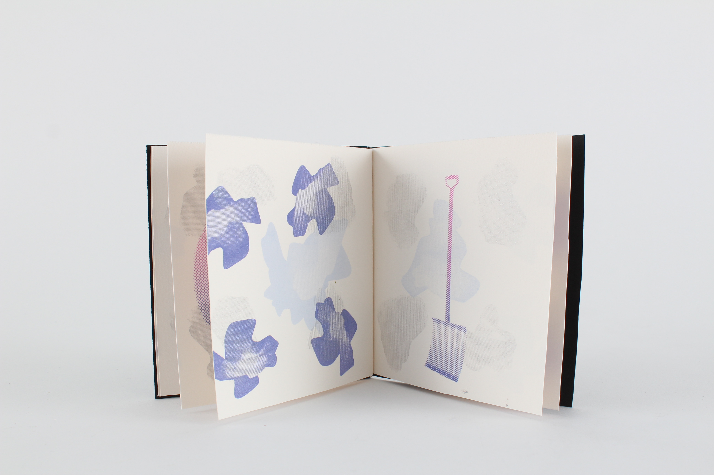
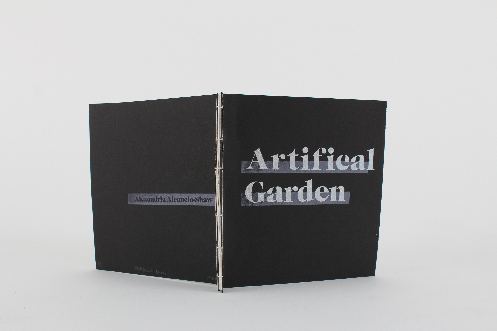
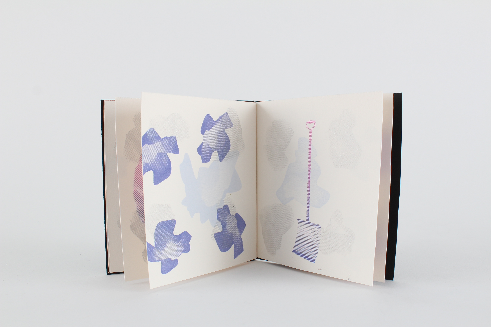
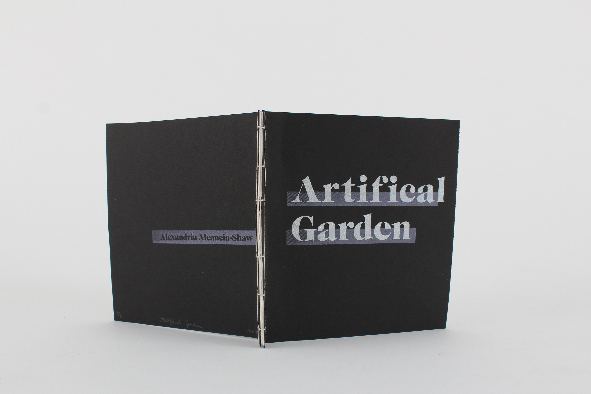

Artificial Garden
2016
Booklet
An edition of three screen printed book featuring the tender tending acts of artificial, rubber gardens, and an examination of the futility of the utility of the objects when caring for plants and flowers that do not die. The motivation behind this was to learn how to make and bind books, while also trying to use all scrap material from other projects. Printed in four colours, on Arches 300 paper.

 


